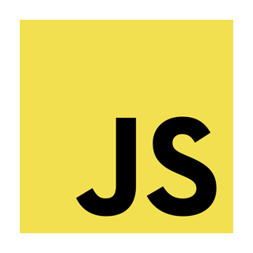
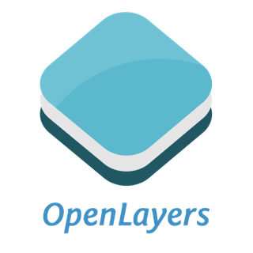
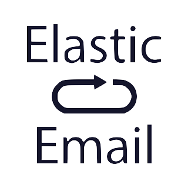
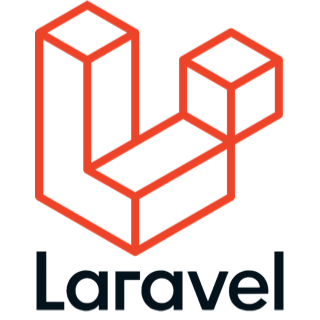
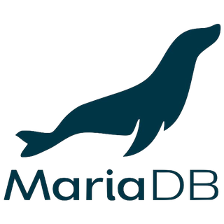
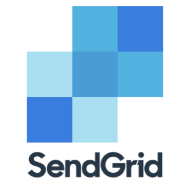
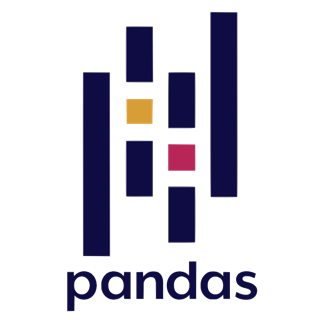

@CODE Hochschule
Previously called SuhBit - a portmanteau of "Suhbat"
("conversation" in Uyghur language) and the well-known computer
concept of "bit". freeTalk.PS is a DIY kit that could be used as
an alternative to traditional messaging platforms. You can use it
to set up your own messaging service in a decentralized manner &
away from any possible surveillance. This project is a gesture of
hacktivism, against the constant targeting of truth-seeking
journalists under the Israeli apartheid and around the world. It
is also a stand against China's repression of Uyghurs in Xinjiang.
@Sozialdemokratische Partei Deutschlands
As a self-employed software development contractor representing
and being represented by theFOUR brand, I worked with The Social
Democratic Party of Germany on their electoral project: "Map of
the future", as a UX designer and a full-stack developer, building
a web application for them between the middle of May & the middle
of August, 2021. This project required utilizing OpenLayers
v6.5.0, SendGrid & other basic web technologies.
Used Technology Stack:



@Yiya (formerly: travSIM Pty LTD)
After introducing a proof-of-concept of a sentiment analysis
solution to the management through an internal hackathon the
company has launched. I was promoted into a team lead in order for
me to turn that concept into a commercial product, I worked with
different teams on scoping the implementation plan of the project
but I didn't stay to witness the development of it as I resigned
due to moving to Berlin, Germany and settling down there. The
proof-of-concept was built with models that are commonly used
within the spectrum of Python's machine learning tools, in
addition to basic web technologies to enable interactivity with
the conceptual product.
@Yiya (formerly: travSIM Pty LTD)
I worked on developing the product search algorithms using PHP &
SQL, specifically the algorithms responsible for listing
individual packages and combined packages based on users’
preferences that were inputted through the different filter UI
elements.
In order for the dataset that fed the search algorithms to be
digestible, a lot of data wrangling had to be done. I was assigned
to find a way to shorten the time spent on manual work, so I wrote
different Python scripts utilizing one of its most powerful
models; Pandas, which resulted in making the process of data entry
fully automated, saving up on development time.
Used Technology Stack:



